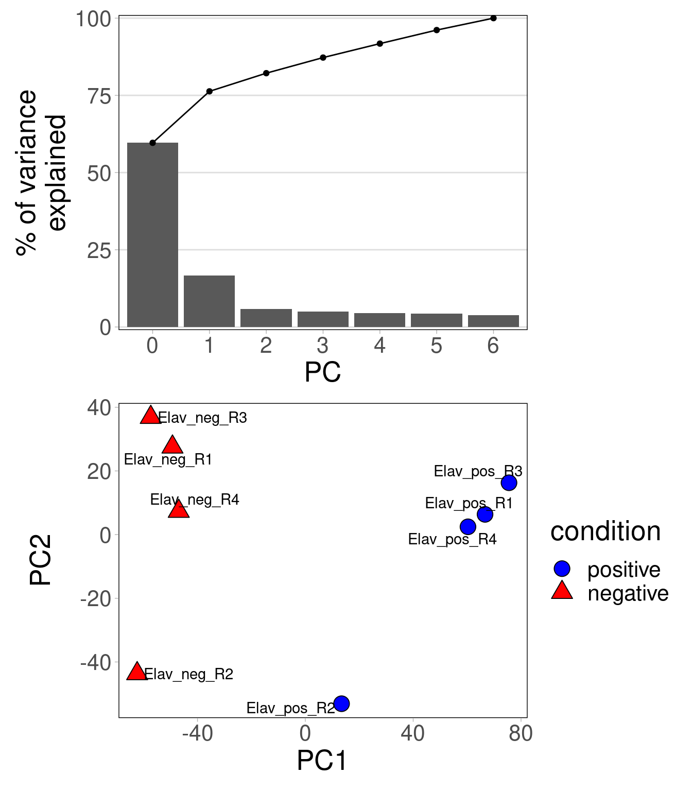
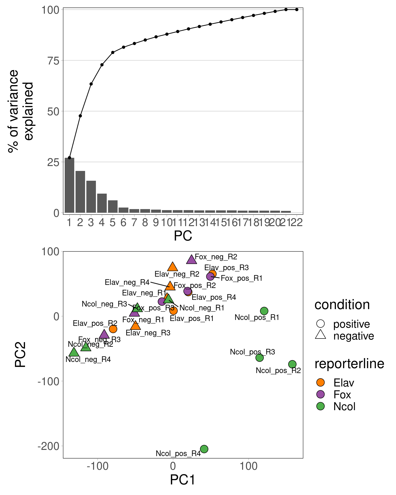
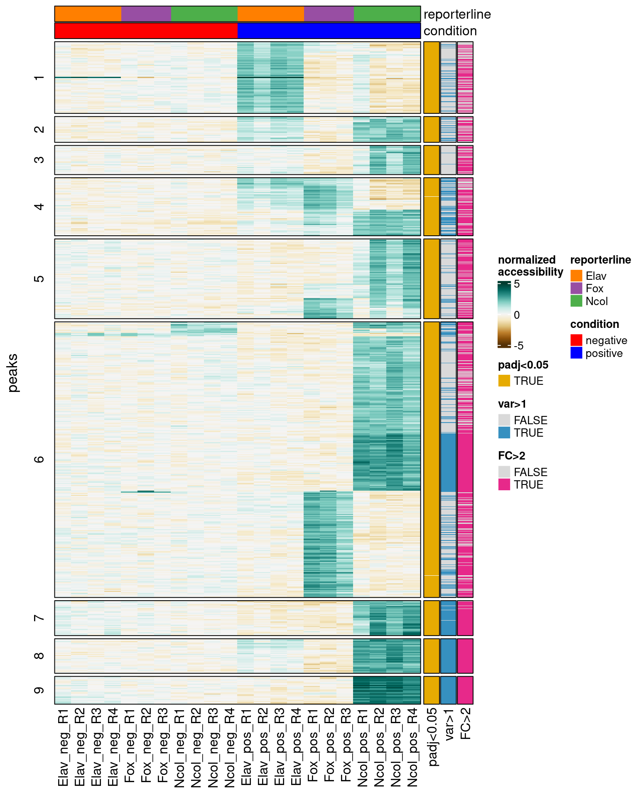
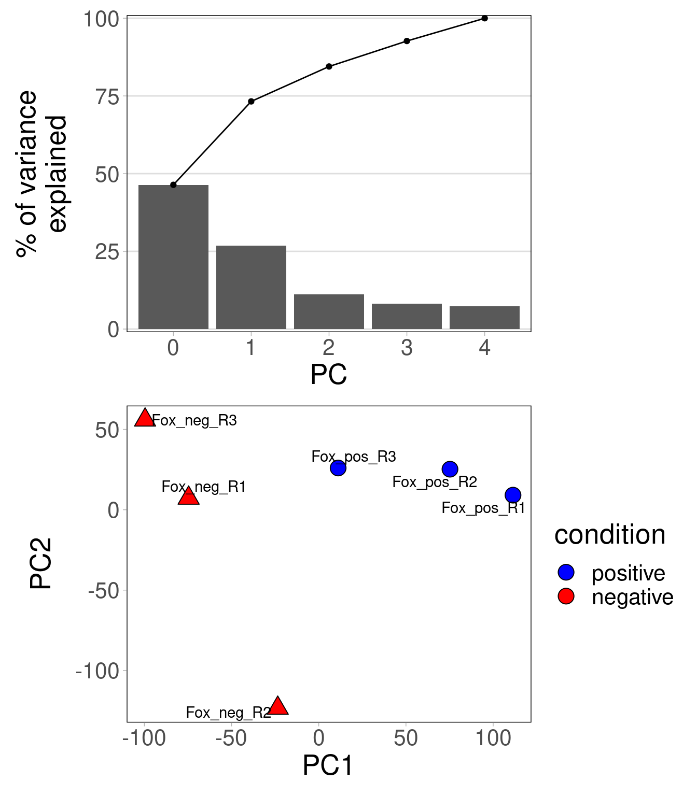
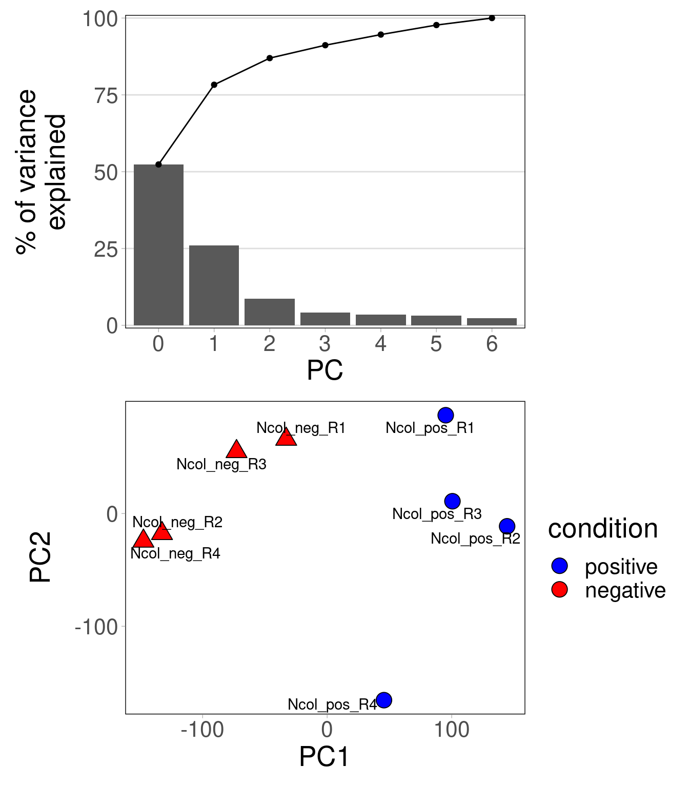
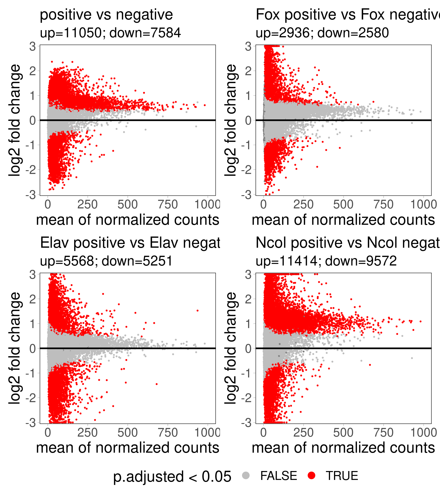

library(data.table)
library(stringr)
library(ggplot2)
theme_py <- theme_light() + theme(
panel.grid.major = element_blank(),
panel.grid.minor = element_blank(),
panel.border = element_rect(colour = "black", fill = NA),
text = element_text(size=20),
strip.placement = "outside",
strip.text = element_text(size=20, color="black"),
strip.background = element_rect(fill="white")
)
theme_set(theme_py)
library(patchwork)
library(ggrepel)
library(ComplexHeatmap)
library(DESeq2)
library(consensusSeekeR)
library(BSgenome.jaNemVect1.1.DToL.Assembly)
library(GenomicRanges)
library(parallel)02. ATACseq
Setup
Load packages
Directories
dat_dir <- "ATACSEQ/nucleosome_free_regions/"
pks_dir <- file.path(dat_dir, "macs2_peaks")
cns_dir <- file.path(dat_dir, "consensus_peaks")
res_dir <- file.path(dat_dir, "results")
fig_dir <- file.path(dat_dir, "plots")
for (newdir in c(cns_dir, res_dir, fig_dir))
dir.create(newdir, showWarnings = FALSE)Peaks counts normalization
Find consensus set of peaks
require(consensusSeekeR)
require(BSgenome.jaNemVect1.1.DToL.Assembly)
require(parallel)
# load peaks
pks_files <- list.files(pks_dir, pattern="narrowPeak", recursive=FALSE, full.names=TRUE)
names(pks_files) <- str_remove(basename(pks_files), ".mLb.clN.ncfree_peaks.narrowPeak")
nP_list <- lapply(names(pks_files), function(x) {
nP <- readNarrowPeakFile(pks_files[x], extractRegions = TRUE, extractPeaks = TRUE)
names(nP$narrowPeak) <- rep(x, length(nP$narrowPeak))
names(nP$peak) <- rep(x, length(nP$peak))
nP
})
regions <- GenomicRanges::GRangesList(lapply(nP_list, function(x) x$narrowPeak))
peaks <- GenomicRanges::GRangesList(lapply(nP_list, function(x) x$peak))
names(regions) <- names(pks_files)
names(peaks) <- names(pks_files)
# get consensus
chrList <- Seqinfo(
seqnames = seqnames(BSgenome.jaNemVect1.1.DToL.Assembly),
seqlengths = seqlengths(BSgenome.jaNemVect1.1.DToL.Assembly),
isCircular = c(rep(FALSE, length(seqnames(BSgenome.jaNemVect1.1.DToL.Assembly))-1), TRUE),
genome = "jaNemVect1.1"
)
message(Sys.time(), " Started calculating consensus")
ur <- unlist(regions)
up <- unlist(peaks)
# debugging
# id <- seqnames(ur)=="NC_064035.1" & start(ur)>1644829 & end(ur)<1649211
# ur <- ur[id]
# up <- up[id]
# chrList <- chrList["NC_064035.1"]
results <- findConsensusPeakRegions(
narrowPeaks = ur,
peaks = up,
chrInfo = chrList,
extendingSize = 250,
expandToFitPeakRegion = FALSE,
shrinkToFitPeakRegion = FALSE,
minNbrExp = 2,
nbrThreads = detectCores()-1
)
message(Sys.time(), " Done calculating consensus")
saveRDS(results, file.path(cns_dir,"consensusSeekeR-results.RDS"))
# resize peaks
pks_cns <- results$consensusRanges
pks_mid <- start(pks_cns) + (end(pks_cns)-start(pks_cns))/2
ranges(pks_cns) <- IRanges(pks_mid,width=0)
pks_scl <- promoters(pks_cns, upstream=125, downstream=125)
# trim out-of-bound peaks
seqlengths(pks_scl) <- seqlengths(BSgenome.jaNemVect1.1.DToL.Assembly)[names(seqlengths(pks_scl))]
pks_scl <- trim(pks_scl)
# save bed file
pks_bed <- as.data.table(pks_scl)
pks_bed[,name:=paste0("peak",1:.N)]
pks_bed[,width:=NULL][,score:="."]
setcolorder(pks_bed, c("seqnames","start","end","name","score","strand"))
fwrite(pks_bed, file.path(cns_dir,"consensusSeekeR-peaks.bed"), sep="\t", col.names=FALSE)Get scores for consensus peaks in all samples.
nth=12
res="ATACSEQ/nucleosome_free_regions/consensus_peaks/consensusSeekeR-peaks-counts.tsv"
bed="ATACSEQ/nucleosome_free_regions/consensus_peaks/consensusSeekeR-peaks.bed"
bam=$( echo ATACSEQ/nucleosome_free_regions/bam/*R*bam )
cols=$( echo -e seqnames start end name score strand | column -t )
for b in $bam
do
echo $b
name=$( basename $b)
cols=$( echo -e ${cols} ${name} | column -t )
done
echo -e ${cols} > ${res%%tsv}txt
bedtools multicov -bams ${bam} -bed ${bed} > ${res}Data for differential peaks analysis
# load counts in peaks
pks_ct <- fread(file.path(cns_dir, "consensusSeekeR-peaks-counts.tsv"), header=FALSE)
colnames <- readLines(file.path(cns_dir, "consensusSeekeR-peaks-counts.txt"), n=1)
colnames <- str_remove_all(colnames, ".mLb.clN.ncfree.sorted.bam")
colnames <- str_split(colnames, " ")[[1]]
colnames(pks_ct) <- colnames
# column data
condition_cols <- c("positive"="blue","negative"="red")
line_cols = c("Elav" = "#ff7f00", "Fox" = "#984ea3", "Ncol" = "#4daf4a")
col_dt <- data.table(sample=colnames(pks_ct)[7:28])
col_dt[,reporterline:=str_extract(sample,"Elav|Fox|Ncol")]
col_dt[,reporterline:=factor(reporterline, levels=c("Elav","Fox","Ncol"))]
col_dt[,condition:=str_extract(sample,"pos|neg")]
col_dt[,condition:=str_replace_all(condition,c("pos"="positive","neg"="negative"))]
col_dt[,condition:=factor(condition, levels = c("negative","positive"))]
col_dt[,group:=paste(as.character(reporterline), as.character(condition), sep=""), by=1:nrow(col_dt)]
col_dt[,group:=factor(group)]
col_df <- copy(col_dt)
class(col_df) <- "data.frame"
rownames(col_df) <- col_df$sample
# counts matrix
pks_mt <- as.matrix(pks_ct[,-c(1:6)])
rownames(pks_mt) <- pks_ct$name
pks_mt <- pks_mt[,rownames(col_df)]
# DESeq2
require(DESeq2)
dds <- DESeqDataSetFromMatrix(
countData = pks_mt,
colData = col_df,
design = ~ condition + reporterline
)
saveRDS(dds, file.path(res_dir, "dds.rds"))Marker peaks
Peaks counts distributions
# normalized accessibility distribution
pks_dt <- as.data.table(pks_mt, keep.rownames = "peak")
pks_dt <- melt.data.table(pks_dt, id.vars = "peak", variable.name = "sample", value.name = "norm_counts")
pks_dt <- merge.data.table(pks_dt, col_dt, by="sample")
setorder(pks_dt, peak, condition, reporterline)
pks_dt[,sample:=factor(sample, levels = unique(pks_dt$sample))]
gp_acc <- ggplot(pks_dt, aes(sample, log10(norm_counts), fill=reporterline)) +
geom_violin(scale = "width", alpha = 0.8, color = "black") +
geom_boxplot(width = 0.5, outlier.shape = NA, alpha = 0.8, color = "black") +
scale_fill_manual(values = line_cols, limits = force) +
scale_y_continuous(expand = expansion(mult = c(0,0.01))) +
labs(x="samples", y="peak\naccessibility") +
theme(
axis.text.x = element_text(angle = 90, vjust = 0.5, hjust=1),
legend.title = element_blank(), legend.position = "none"
)
var_dt <- pks_dt[,.(var=var(norm_counts)),.(peak)]
gp_var <- ggplot(var_dt, aes(log10(var))) +
geom_density() +
scale_x_continuous(limits=c(-4,NA)) +
scale_y_continuous(expand = expansion(mult = c(0,0.01))) +
labs(x = "log10(accessibility variance)")
gp_pch <- gp_acc / gp_var + plot_layout(heights = c(2,1))
gp_pch
Use normalized log-transformed accessibility data
# log transformation
norm_mt <- (pks_mt+10)/apply(pks_mt+10,1,median) # row normalize to bring genes to same range
norm_mt <- log2(norm_mt)
# varance sabilizing transformation
# dds <- readRDS(file.path(res_dir, "dds.rds"))
# vsd <- vst(dds, blind=FALSE)
# norm_mt <- vsd@assays@data[[1]]
# norm_mt <- (pks_mt+10)/apply(pks_mt+10,1,median) # row normalize to bring genes to same rangeIdentify marker peaks
# gene markers by high FC + significant DEseq2 LTR test
dds <- readRDS(file.path(res_dir, "dds.rds"))
dds <- DESeq(dds, test="LRT", reduced=~1)estimating size factorsestimating dispersionsgene-wise dispersion estimatesmean-dispersion relationshipfinal dispersion estimatesfitting model and testingdds_res <- results(dds)
dds_qval <- dds_res$padj
names(dds_qval) <- rownames(dds_res)
peaks_deseq <- names(which(dds_qval<1e-2))
peaks_high <- names(which(apply(norm_mt, 1, function(x) sort(x,decreasing = T)[2])>=1.8))
peaks_marks <- intersect(peaks_high, peaks_deseq)
length(peaks_marks)[1] 2628Cluster peaks
set.seed(1950)
# determine k for kmeans
ks <- 1:20
tot_withinss <- sapply(ks, function(k) {
cl <- kmeans(norm_mt[peaks_marks,], k)
cl$tot.withinss
})
elbow_dt <- data.table(k = ks, tot_withinss = tot_withinss)
elbow_gp <- ggplot(elbow_dt, aes(x = k, y = tot_withinss)) +
geom_line() + geom_point()+
scale_x_continuous(breaks = ks)
elbow_gp
Cluster peaks
# kmeans
set.seed(1950)
k <- 15
cl <- kmeans(norm_mt[peaks_marks,], k)
peaks_order_list <- tapply(names(cl$cluster), cl$cluster, function(gs) {
cor_peaks <- cor(t(norm_mt[gs,]))
hclust_peaks <- hclust(as.dist(1-cor(cor_peaks)),method="ward.D2")
rownames(cor_peaks)[hclust_peaks$order]
})
names(peaks_order_list) <- unique(cl$cluster)
peaks_order_list <- peaks_order_list[as.character(seq_along(peaks_order_list))]
# cluster clusters
cluster_order <- hclust(dist(cor(t(cl$centers)),method="euclidean"),method="ward.D2")$order
peaks_order_list <- peaks_order_list[as.character(cluster_order)]
peaks_order <- unname(unlist(peaks_order_list))
clusters_dt <- data.table(
peak = peaks_order,
clusters = as.character(rep(names(peaks_order_list), sapply(peaks_order_list, length)))
)Heatmap of markers
# order rows and columns
samples_order <- col_dt[order(condition,reporterline)]$sample
plot_mt <- norm_mt[peaks_order,samples_order]
# center at 0
plot_min <- quantile(abs(range(plot_mt)),0.75)
plot_min <- 5
plot_mt <- pmin(pmax(plot_mt,-plot_min),plot_min)
# heatmap colors
col_vec <- colorRampPalette(RColorBrewer::brewer.pal(11,'BrBG'))(1000)
col_fun <- circlize::colorRamp2(seq(-plot_min, plot_min, length.out = length(col_vec)), col_vec)
# color annotaitons
col_ann <- HeatmapAnnotation(
which = "column", border = TRUE,
"reporterline" = as.character(col_dt[match(colnames(plot_mt),sample)]$reporterline),
"condition" = as.character(col_dt[match(colnames(plot_mt),sample)]$condition),
col = list("reporterline" = line_cols, "condition" = condition_cols)
)
# peak module annotations
clann <- clusters_dt[match(rownames(plot_mt),peak)]$clusters
clann_lab <- unique(clusters_dt[match(rownames(plot_mt),peak)]$clusters)
clann <- factor(clann, levels=clann_lab)
module_ann <- HeatmapAnnotation(
which = "row", border = TRUE,
"module" = anno_block(
labels = clann_lab,
gp = gpar(col=NA)
)
)
# peaks annotations
row_labels_marks_ids <- match(clusters_dt[,.SD[1],clusters]$peak, rownames(plot_mt))
row_labels_marks <- clusters_dt[,.SD[1],clusters]$clusters
mark_ann <- HeatmapAnnotation(
which = "row",
marker = anno_mark(at = row_labels_marks_ids, labels = row_labels_marks),
show_legend = FALSE
)
mark_ann <- HeatmapAnnotation(
which = "row", border = TRUE,
"padj<0.05" = rownames(plot_mt) %in% peaks_deseq,
"var>1" = rownames(plot_mt) %in% peaks_vari,
"FC>2" = rownames(plot_mt) %in% peaks_fc,
col = list(
"padj<0.05" = c("TRUE" = "#e6ab02", "FALSE"="#d9d9d9"),
"var>1" = c("TRUE" = "#3690c0", "FALSE"="#d9d9d9"),
"FC>2" = c("TRUE" = "#e7298a", "FALSE"="#d9d9d9")
)
)
# heatmap
hm <- Heatmap(
plot_mt, name = "normalized\naccessibility",
col = col_fun,
cluster_rows = FALSE, cluster_columns = FALSE,
show_row_names = FALSE, show_column_names = TRUE,
row_title = "peaks",
row_split = clann,
cluster_row_slices = FALSE,
top_annotation = col_ann,
left_annotation = module_ann, right_annotation = mark_ann,
border = TRUE
)
hm
PCA
PCA on all samples.
set.seed(1950)
pca_res <- prcomp(t(norm_mt), center = TRUE)
# variance explained
pca_var <- data.table(pct_var = round(((pca_res$sdev) ^ 2 / sum((pca_res$sdev) ^ 2)* 100), 2))
pca_var[,pct_cum:=cumsum(pct_var)]
pca_var[,PC:=factor(1:.N)]
gp_var <- ggplot(pca_var, aes(PC, pct_var)) +
geom_bar(stat = "identity") +
geom_line(aes(y = pct_cum, group = 1)) +
geom_point(aes(y = pct_cum)) +
scale_y_continuous(expand = expansion(0.01,0)) +
labs(y = "% of variance\nexplained", x = "PC") +
theme(panel.grid.major.y = element_line(size = 0.5))
pca_dt <- as.data.table(pca_res$x, keep.rownames = "sample")
pca_dt <- merge.data.table(col_dt, pca_dt, by="sample", sort=FALSE)
gp_bip <- ggplot(pca_dt, aes(PC1, PC2, fill=reporterline, shape=condition)) +
geom_point(size=5) +
scale_fill_manual(values = line_cols) +
scale_shape_manual(values = c("positive" = 21, "negative" = 24)) +
guides(fill = guide_legend(override.aes=list(shape=21))) +
geom_text_repel(aes(label = sample))
gp_pch <- gp_var / gp_bip
gp_pch
PCA per cell line
set.seed(1950)
gp_l <- lapply(names(line_cols), function(cl) {
pca_res <- prcomp(t(norm_mt[,grep(cl,colnames(norm_mt))]), center = TRUE)
# variance explained
pca_var <- data.table(pct_var = round(((pca_res$sdev) ^ 2 / sum((pca_res$sdev) ^ 2)* 100), 2))
pca_var <- pca_var[-nrow(pca_var)]
pca_var[,pct_cum:=cumsum(pct_var)]
pca_var[,PC:=factor(1:.N-1)]
gp_var <- ggplot(pca_var, aes(PC, pct_var)) +
geom_bar(stat = "identity") +
geom_line(aes(y = pct_cum, group = 1)) +
geom_point(aes(y = pct_cum)) +
scale_y_continuous(expand = expansion(0.01,0)) +
labs(y = "% of variance\nexplained", x = "PC") +
theme(panel.grid.major.y = element_line(size = 0.5))
# pca plot
pca_dt <- as.data.table(pca_res$x, keep.rownames = "sample")
pca_dt <- merge.data.table(col_dt, pca_dt, by="sample", sort=FALSE)
gp_bip <- ggplot(pca_dt, aes(PC1, PC2, fill=condition, shape=condition)) +
geom_point(size=5) +
scale_shape_manual(values = c("positive" = 21, "negative" = 24)) +
scale_fill_manual(values = condition_cols) +
guides(fill = guide_legend(override.aes=list(shape=21))) +
geom_text_repel(aes(label = sample))
gp_var / gp_bip
})
gp_l[[1]]
[[2]]
[[3]]
Differntial peak analysis
Differential analysis with DESeq2
# all positive vs negative
dds_cond <- DESeqDataSetFromMatrix(
countData = pks_mt,
colData = col_df,
design = ~ condition
)
dds_cond <- DESeq(dds_cond)estimating size factorsestimating dispersionsgene-wise dispersion estimatesmean-dispersion relationshipfinal dispersion estimatesfitting model and testing-- replacing outliers and refitting for 26 genes
-- DESeq argument 'minReplicatesForReplace' = 7
-- original counts are preserved in counts(dds)estimating dispersionsfitting model and testing# condition within reporter line line
dds_conl <- DESeqDataSetFromMatrix(
countData = pks_mt,
colData = col_df,
design = ~ group
)
dds_conl <- DESeq(dds_conl)estimating size factorsestimating dispersionsgene-wise dispersion estimatesmean-dispersion relationshipfinal dispersion estimatesfitting model and testingFunction for MA plots
ggplotMA <- function(res, padj_thr=0.05,sign_col="red",lims_fc=c(NA,NA),lims_mean=c(NA,NA),title="") {
res_dt <- as.data.table(res)
res_dt[log2FoldChange<lims_fc[1], log2FoldChange:=lims_fc[1]]
res_dt[log2FoldChange>lims_fc[2], log2FoldChange:=lims_fc[2]]
gp <- ggplot(res_dt, aes(x=baseMean, y=log2FoldChange, colour=padj<padj_thr)) +
geom_point(size=0.5) +
scale_color_manual(values = c("FALSE"="grey", "TRUE"=sign_col), name = sprintf("p.adjusted < %s",padj_thr)) +
guides(colour = guide_legend(override.aes = list(size=4))) +
scale_y_continuous(limits = lims_fc, expand = expansion(mult = c(0.01,0.01))) +
scale_x_continuous(limits = lims_mean) +
geom_hline(aes(yintercept = 0), size = 1) +
labs(
x = "mean of normalized counts",
y = "log2 fold change",
subtitle = sprintf(
"up=%s; down=%s",
nrow(res_dt[padj<padj_thr & log2FoldChange>0]),
nrow(res_dt[padj<padj_thr & log2FoldChange<0])
)
) +
theme(
legend.position = "bottom",
plot.title = element_text(size = 20),
plot.subtitle = element_text(size = 18)
)
if (title!="")
gp <- gp + labs(title = title)
gp
}Contrasts
contrast <- c("condition","positive","negative")
res_pos <- results(dds_cond, contrast = contrast)
res_lfc_pos <- lfcShrink(dds_cond, contrast = contrast, type="ashr")
gp_pos <- ggplotMA(
res_lfc_pos,
lims_fc=c(-3,3), lims_mean=c(NA,1e3),
title=sprintf("%s vs %s",contrast[2],contrast[3])
)
contrast <- c("group", "Foxpositive", "Foxnegative")
res_fox <- results(dds_conl, contrast = contrast)
res_lfc_fox <- lfcShrink(dds_conl, contrast = contrast, type="ashr")
contrast <- str_replace_all(contrast,c("positive"=" positive","negative"=" negative"))
gp_fox <- ggplotMA(
res_lfc_fox,
lims_fc=c(-3,3), lims_mean=c(NA,1e3),
title=sprintf("%s vs %s",contrast[2],contrast[3])
)
contrast <- c("group", "Elavpositive", "Elavnegative")
res_elav <- results(dds_conl, contrast = contrast)
res_lfc_elav <- lfcShrink(dds_conl, contrast = contrast, type="ashr")
contrast <- str_replace_all(contrast,c("positive"=" positive","negative"=" negative"))
gp_elav <- ggplotMA(
res_lfc_elav,
lims_fc=c(-3,3), lims_mean=c(NA,1e3),
title=sprintf("%s vs %s",contrast[2],contrast[3])
)
contrast <- c("group", "Ncolpositive", "Ncolnegative")
res_ncol <- results(dds_conl, contrast = contrast)
res_lfc_ncol <- lfcShrink(dds_conl, contrast = contrast, type="ashr")
contrast <- str_replace_all(contrast,c("positive"=" positive","negative"=" negative"))
gp_ncol <- ggplotMA(
res_lfc_ncol,
lims_fc=c(-3,3), lims_mean=c(NA,1e3),
title=sprintf("%s vs %s",contrast[2],contrast[3])
)
gp_pch <- ((gp_pos + gp_fox) / (gp_elav + gp_ncol)) +
plot_layout(guides = "collect") & theme(legend.position = "bottom")
gp_pch
Motif discovery
De novo motifs in differentially accessible peaks
Footprinting
Merge replicates per condition
bam_dir="ATACSEQ/nucleosome_free_regions/bam/"
nth=18
for line in Fox Elav Ncol
do
for cond in pos neg
do
name=${line}_${cond}
echo ${name}
bams=$( echo ${bam_dir}/${name}*bam )
samtools merge -@ ${nth} ${bam_dir}/${name}.ncfree.bam ${bams}
samtools sort -@ ${nth} -o ${bam_dir}/${name}.ncfree.sorted.bam ${bam_dir}/${name}.ncfree.bam
rm ${bam_dir}/${name}.ncfree.bam
samtools index -@ ${nth} ${bam_dir}/${name}.ncfree.sorted.bam
done
doneFootprint score calculation for consensus peaks
conda activate TOBIAS_ENV
bam_dir="ATACSEQ/nucleosome_free_regions/bam/"
out_dir="ATACSEQ/nucleosome_free_regions/footprint/"
mkdir ${out_dir}
peaks="ATACSEQ/nucleosome_free_regions/consensus_peaks/consensusSeekeR-peaks.bed"
genome="genome/Nvec_vc1.1_gDNA.fasta"
nth=12
for line in Fox Elav Ncol
do
for cond in pos neg
do
name=${line}_${cond}
echo $(date) "- Starting ATACorrect for" ${name}
TOBIAS ATACorrect \
--bam ${bam_dir}/${name}.ncfree.sorted.bam \
--genome ${genome} \
--peaks ${peaks} \
--prefix ${name} \
--outdir ${out_dir}/ATACorrect \
--cores ${nth}
echo $(date) "- Starting FootprintScores"
TOBIAS FootprintScores \
--signal ${out_dir}/ATACorrect/${name}_corrected.bw \
--regions ${peaks} \
--fp-min 10 --fp-max 50 \
--output ${out_dir}/${name}_footprints.bw \
--cores ${nth}
done
doneMotifs
Motif scores in consensus peaks
- Differential peaks between conditions
- Shared peaks with different footprint scores